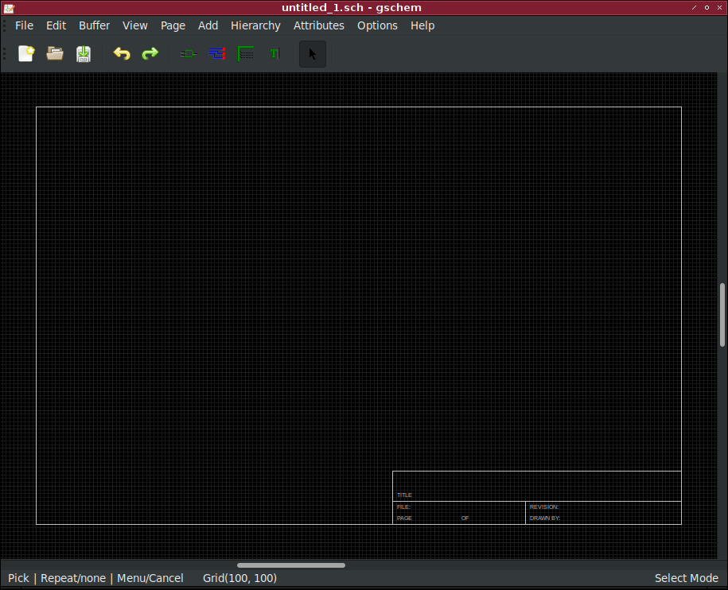
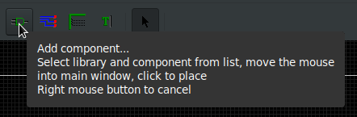
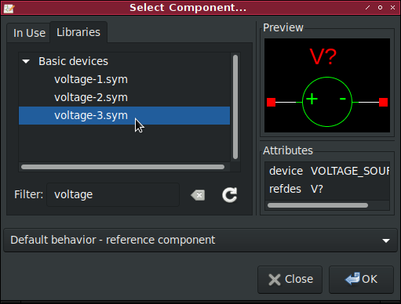
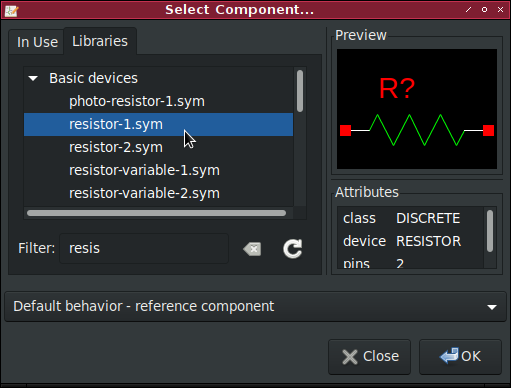
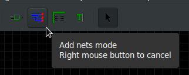
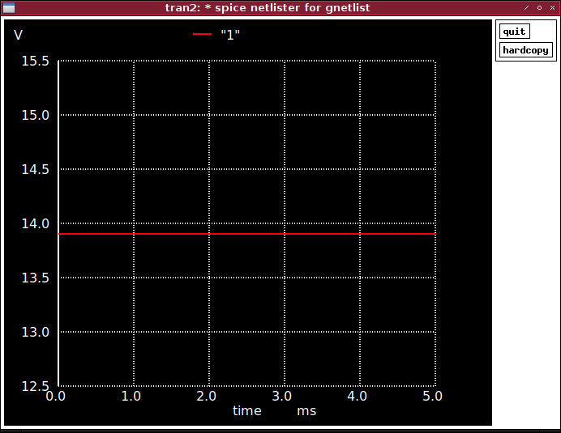
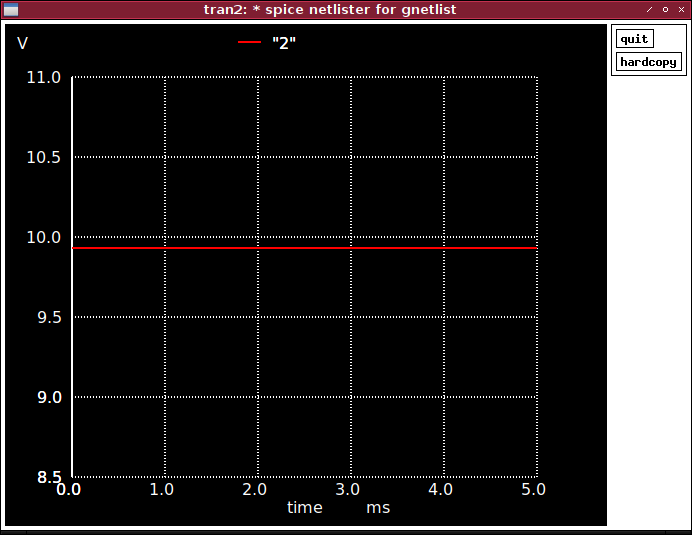

Shēmas zīmēšana
Komandrindā atver gschem vai arī izvēlas to no programmu saraksta vai
sākuma izvēlnes, kā tas ir ja sistēma lieto GNOME vai LXDE.
Pēc atvēršanas ir redzams tukšas shēmas logs.
Tiks izveidots sprieguma dalītāja slēgums.

Atver komponenšu izvēlni
Atver ar I vai ikonu rīkjoslā.

Izvēlas un uzliek sprieguma avotu no komponenšu saraksta

Izvēlas un uzliek rezistoru no komponenšu saraksta

Piebilde: komponentes var rotēt nospiežot E + R
vai izvēloties opciju no izvēlnes Edit.
Pārvietot var ar M vai izvēloties opciju no izvēlnes Edit.
Savieno komponentes
”Node” rīku izvēlas ar N vai ikonu.

Iestata komponenšu vērtības
Komponenšu vērtības var mainīt uzspiežot dubult-klikšķi
uz izvēlētās komponentes.
| Komponente |
Vienība |
Vērtība |
| V1 |
V |
studenta apliecības numura pēdējo trīs
ciparu skaitlis dalīts ar 10 |
| R1 |
Ω |
studenta apliecības numura priekšpēdējā cipara skaitlis + 1 |
| R2 |
Ω |
studenta apliecības numura pēdējā cipara skaitlis + 1 |
Gala rezultātu sprieguma dalītājam var izrēķināt ar
Vout=V1*R2/(R1+R2)
Iestata zemes punktu
Izvēlas savienojumu, kurš būs zemējums, rediģē to
un pievieno opciju ”netname” ar vērtību 0.
Piebilde: Zemējuma simbola iestatīšana nav obligāta,
bet šeit ir norādīta vieglākai pārskatāmībai.
Saglabā ķēdi kā voltage_divider.sch
Saglabā shēmu kā PostScript(PS) failu atverot izvēlni File,
izvēloties Print un izvēloties opciju ”Print to file”.
SPICE netlist izveidošana
Atver komandrindu vietā, kur tika saglabāta ķedes shēma.
Izpilda gnetlist -g -o voltage_divider.net voltage_divider.sch,
kas izveido SPICE netlist no iepriekš uzzīmētās shēmas.
SPICE simulācija ar ngspice
Komandrindā atver ngspice.
Ar source voltage_divider.net iestata ģenerēto SPICE netlist
kā ievades avotu simulatoram.
Izvades rezultāts:
ngspice 1 -> source voltage_divider.net
Circuit: * spice netlister for gnetlist
Ar tran 0.05ms 5ms veic ķēdes simulāciju pārejas režīmā.
Ķēde tiek simulēta ar soli 0.05ms līdz 5ms solim.
Pārejas režīma simulācija ir domāta maiņstrāvas ķēdēm,
bet var izmantot arī līdzstrāvas ķēdēm, kā šinī gadījumā.
Izvades rezultāts:
ngspice 1 -> tran 0.05ms 5ms
Doing analysis at TEMP = 27.000000 and TNOM = 27.000000
Initial Transient Solution
--------------------------
Node Voltage
---- -------
2 9.92857
1 13.9
v1#branch -0.992857
No. of Data Rows : 108
Iestata grafika fona krāsu ar set hcopypscolor = 0
Izvada uz ekrāna simulācijas rezultātu vadā ”1” ar plot ”1”

Piebilde: Vadā ”1” tiek rādīts spriegums sprieguma avotam V1.
Saglabā izveidoto grafiku ar
hardcopy voltage_divider_Vnode1.ps ”1”
Izvada uz ekrāna simulācijas rezultātu vadā ”2” ar plot ”2”

Piebilde: Vadā ”2” tiek rādīts spriegums Vout
jeb sprieguma dalītāja izvades spriegums.
Saglabā izveidoto grafiku ar
hardcopy voltage_divider_Vnode1.ps ”1”
Pēc lietošanas ngspice aizver ar komandu exit.